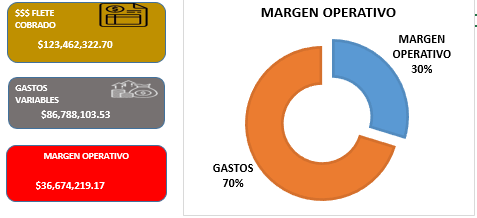
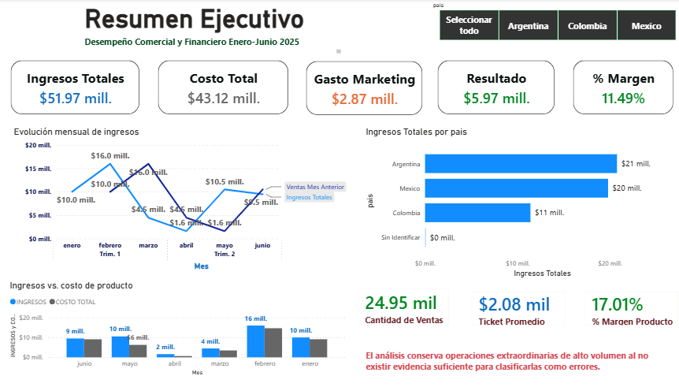
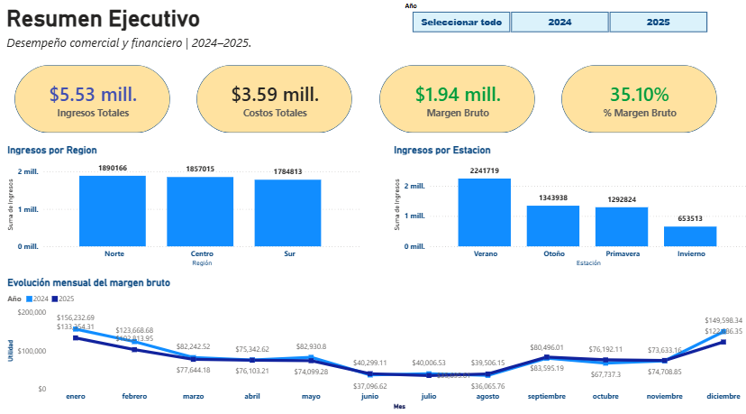

01
Excel
Limpieza, transformación, análisis, KPIs y dashboards interactivos.
PORTAFOLIO · DATA ANALYTICS
Analista de Datos con experiencia en el sector transporte. Transformo datos operativos y comerciales en indicadores, insights y visualizaciones para apoyar la toma de decisiones.
assets/perfil.jpg
Mi experiencia profesional se ha desarrollado en el sector transporte, trabajando con información operativa, costos, indicadores y dashboards para dar seguimiento al desempeño y apoyar la toma de decisiones.
Complementé esa experiencia con formación especializada en análisis de datos, incorporando Excel, SQL, Python y Power BI para limpiar, transformar, analizar y comunicar información con un enfoque práctico de negocio.
Herramientas que utilizo para pasar de datos sin procesar a información accionable.
Limpieza, transformación, análisis, KPIs y dashboards interactivos.
Consultas, agregaciones, filtros, joins y transformación de información.
Análisis exploratorio y estadístico utilizando herramientas del ecosistema Python.
Modelado, indicadores y visualizaciones para comunicar hallazgos.
Cada proyecto sigue una lógica de negocio: contexto → problema → análisis → insights → recomendaciones.

01ANÁLISIS OPERATIVO
Análisis de 4,173 viajes mediante KPIs de costos, rutas, combustible, unidades y rentabilidad operacional.

02ANÁLISIS DE NEGOCIO
Análisis financiero y de comportamiento de usuarios mediante KPIs, funnel secuencial, cohortes y prueba A/B.

03BUSINESS INTELLIGENCE
Análisis comercial 2024–2025 de ingresos, costos, margen bruto, categorías, segmentos y estacionalidad.
Entender la pregunta de negocio.
Identificar fuentes y variables.
Preparar datos confiables.
Buscar patrones y relaciones.
Convertir resultados en hallazgos.
Traducir evidencia en acciones.
¿HABLAMOS?
Estoy abierto a oportunidades, proyectos y conversaciones relacionadas con análisis de datos.